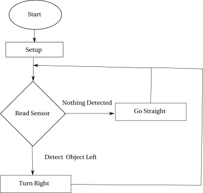

Class 1 Homework
Table of Contents
1 Homework comments
- You have just over a month to the competition.
- Don't wait until the last minute!
- Yes, I expect you to get all the homework done before the next class.
- No, do not work on homework during class. That's why it's called "home" work.
- If you're stuck for a long time, send me an email and be specific with any relevant error messages or behavior you're seeing. You can commit changes to GitHub and sync so I can see your program.
- Commit your changes to GitHub so you don't lose your work.
- With GitHub, you can work on different computers as long as you commit your work and sync with GitHub. Just make sure you install the necessary tools on the other computer following the instructions in the Robotics MB Reference Guide.
2 Class 2 Exercises
- Use the Sensor sketch we started in class. Save it under a different name.
- Normalize the sensor readings so that if there is nothing in front of the sensor, the reading is close to zero. Use separate normalization offset values for left, center, and right.
- Write a function that prints out “Detect Left” when there is something on the left, “Detect Right” when there is something on the right, and “Detect Straight” if there is something straight ahead.
- Write a function to control the motors to avoid obstacles if they come within a certain range.
- Add the capability to use the IR remote to switch between autonomous and manual control.
3 Robot Design
- In your Engineering Notebook, start sketching designs for the competition.
Refer to the Robotic Competition Rules and come up with approaches for:
- How to load/unload the payload
- How to carry the payload
- The logic required to navigate around a maze
An example logic diagram is shown below.

Figure 1: Example logic diagram
- Program your robot to implement your maze navigation logic
- Build your own maze and try to cover different maze "scenarios"
such as:
- Right turn
- Left turn
- "U" turn
- Dead end
- Build your own maze and try to cover different maze "scenarios"
such as:
4 Robotics Merit Badge Workbook
By Class 3, make sure you have the following sections filled out:
- 1a and b - Safety
- Section 3 - General knowledge. Discuss 3 of 5 major Robotic fields
- Section 4 a and b.
- Describe your approach to performing the competition tasks
- Start writing down designs for your robot.